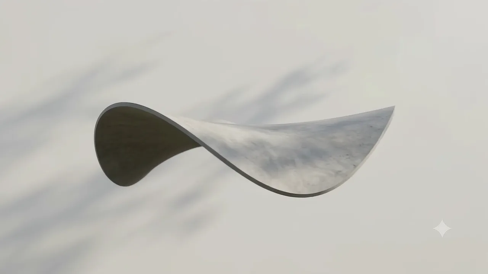

What is Ferrocement?
Ferrocement is cement mortar packed into many layers of thin steel wire mesh. The result is a thin, strong, seamless shell — like a boat hull — that can take almost any shape.
Steel fabric + cement = a thin, strong shell
Think of an eggshell or a boat hull — thin, curved and surprisingly strong. Ferrocement works the same way, with steel mesh spread through every millimetre.

From steel skeleton to seamless shell
Every FERROGRID structure follows the same four stages — whether it's a pool, a dome or a grotto.
-
 1
1
Skeletal steel framework
Steel rods are bent and tied into the skeleton of the structure — the outline of a dome, a pool, a shell or a wall.
-
 2
2
Layers of wire mesh
Several layers of fine steel wire mesh are wrapped and tied over the frame, spreading reinforcement evenly through the whole shell.
-
 3
3
Hand-plastered mortar
Rich cement mortar is pressed through and over the mesh by hand, forming a dense, seamless shell with no gaps for water to find.
-
4
Curing & finishing
The shell is cured carefully, then finished to suit the project — tiled, textured like rock, painted, or covered with earth and grass.
Advantages you can see in every build
Almost any shape
Domes, curves, caves and freeform pools — the mesh is shaped first, so design is not limited to straight lines.
Thin & lightweight
Thin shells weigh far less than conventional walls and slabs, which suits hilly and remote sites.
Crack resistant
Closely spaced mesh spreads stress through the whole shell, helping it resist cracking.
Watertight
A dense, seamless mortar shell makes ferrocement ideal for pools, tanks and underground spaces.
Less material
Thin sections use less cement and steel than conventional construction for the same space.
Little formwork
The mesh itself holds the shape, so complex forms need far less shuttering.
Ferrocement vs RCC vs brick
A quick, general comparison — the right choice always depends on your site and design.
| Aspect | Ferrocement | RCC concrete | Brick / block masonry |
|---|---|---|---|
| Shapes possible | Curves, domes, caves and freeform shells | Mostly straight walls and flat slabs — curves need costly custom shuttering | Straight walls, small arches |
| Cracking | Fine mesh everywhere spreads stress, so it resists cracking | Bars are spaced further apart; cracks can open between them | Mortar joints can crack if the ground settles |
| Water-tightness | Dense, seamless shell | Joints usually need extra waterproofing | Porous — needs plaster and waterproofing |
| Shuttering | Very little — the mesh holds the shape | Full shuttering for every pour | None, but slow to lay brick by brick |
| Hilly & remote sites | Light materials that can be carried by hand | Needs shuttering, mixers and often ready-mix trucks | Heavy bricks to transport |
| Cost | Often lower for shells, roofs, pools and tanks* | Standard | Low per wall, but needs heavier foundations |
| Best for | Pools, domes, cottages, caves, tanks and rock art | Columns, beams and multi-storey buildings | Ordinary rooms and boundary walls |
*Studies in India have reported ferrocement roofing costing roughly 25–40% less than RCC. Your actual cost depends on your land, the design and finishes, so we quote after a free site visit.
Ferrocement vs RCC vs fibreglass pools
The three most common ways to build a pool — and how they compare for resorts and hilly sites.
| Aspect | Ferrocement pool | RCC pool | Fibreglass pool |
|---|---|---|---|
| Shape & size | Any shape or size — freeform, infinity edge, natural rock | Any size; curves need complex shuttering | Factory moulds only; width limited by road transport |
| Joints | One seamless shell | Construction joints that must be sealed | Seamless one-piece shell |
| Site access | Materials carried by hand — ideal for slopes and resorts | Shuttering, mixers and often a concrete pump | Needs a truck and crane to reach the pit |
| Finishes | Tiles, mosaic, stone or rock texture | Tiles, mosaic or stone | Factory gel-coat colours |
| Repairs | Patched on site by skilled masons | Patched on site | Needs specialist gel-coat repair |
Honest answers before you build
Not for tall buildings
For columns, beams and multi-storey frames, RCC is the right tool. We often combine both — RCC where loads are heavy, ferrocement for shells, roofs and features.
Workmanship matters
The mesh must be fully packed and covered with mortar — gaps let steel rust. Skilled, experienced crews make the difference, which is why every shell is built by our own team.
Planned for heat
A thin roof in full sun warms up quickly, so we plan earth or green-roof cover, insulation, light coatings and ventilation to keep rooms cool.
Ferrocement in our services
One material across every service — choose one to see what we build.


What is ferrocement?
Ferrocement is a thin, strong form of reinforced concrete made from layers of closely spaced steel wire mesh, filled and covered with rich cement mortar. The mesh can be shaped first, so ferrocement can form curves, domes, caves and freeform shells that are hard to build with conventional concrete.
Is ferrocement the same as RCC (reinforced cement concrete)?
No. Both use cement and steel, but RCC uses thicker sections with reinforcement bars spaced further apart, while ferrocement uses thin sections with many layers of fine wire mesh spread evenly through the shell. This makes ferrocement lighter and better at controlling cracks in thin, curved shapes.
How strong is ferrocement?
Ferrocement is strong for its thickness because the closely spaced mesh spreads stress through the whole shell. Curved forms such as domes and arches add further strength, which is why ferrocement is used for pools, water tanks, domes and underground spaces.
Is ferrocement waterproof?
A well-built ferrocement shell is dense and seamless, which makes it highly water-resistant — ideal for swimming pools, water tanks and underground rooms. We also plan waterproofing and drainage to suit each site.
How long does a ferrocement structure last?
With good design, workmanship and routine care, ferrocement structures are built to last for decades. We build our ferrocement swimming pools for 50+ years of durability.
Is ferrocement cheaper than conventional construction?
It can be more economical, because thin shells use less cement and steel and need less formwork. The final cost still depends on your land, the structure and the finishes, so we quote each project after a site visit.
Ready to Build Your Resort Cottage
or Swimming Pool?
Start your project today with a free, no-obligation site consultation from our expert team.
Request a Free Site Consultation